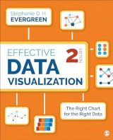
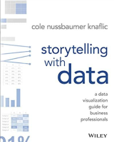

… Excel#
Don’t discount Excel! If you have fewer than 1,000 rows of data, Excel may be the only tool you need. For ideas for creating impactful visualizations with Excel, take a look at
Data visualization in Excel : a guide for beginners, intermediates, and wonks
by Jonathan Schwabish
Boca Raton : AK Peters/CRC Press, 2023.
A companion to his successful Better Data Visualizations: A Guide for Scholars, Researchers, and Wonks, Schwabish shows Excel remains a powerful tool for visualizing data. In each chapter, users can find detailed instructions for building almost 30 additional graphs outside of Excel’s default graph library. From the simple heatmap to the more advanced Marimekko chart, this book will help you create more colorful, effective data visualizations for your audience.

Effective data visualization : the right chart for the right data, 2nd edition
by Stephanie Evergreen
Thousand Oaks, California : SAGE Publications, Inc., 2000.
Evergreen’s Effective Data Visualization: the Right Chart for the Right Data provides detailed instructions for constructing and then formatting Excel graphs that inspire conversations and support decision-making. A fun ninja rating scale helps you to decide how challenging it may be to create each graph and is embedded in the side-margins of each chapter. Further, an entire chapter offers ideas for visualizing qualitative and quantitative data.

Storytelling with data : a data visualization guide for business professionals
by Cole Nussbaumer Knaflic
Hoboken, New Jersey : Wiley, 2015.
Paired with its companion Storytelling with data : let’s Pratice!, this book is designed to help you master communicating with data. Knaflic both shows you how to and pushes you to make your graphs clear, concise, and actionable, all while focusing on the needs of your audience.